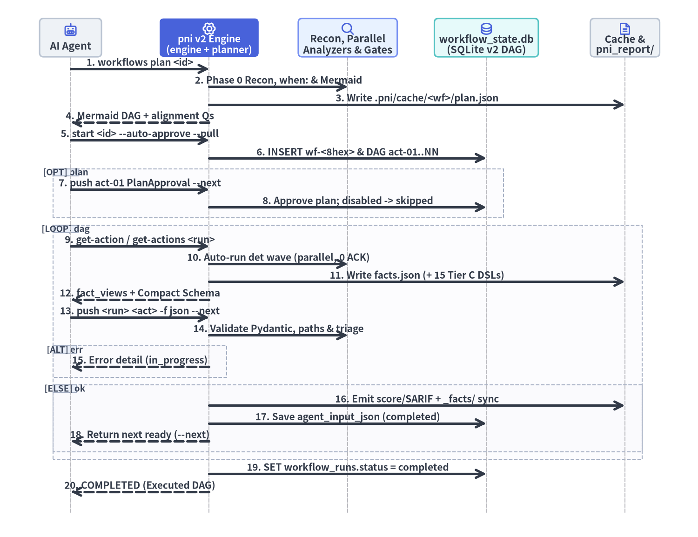
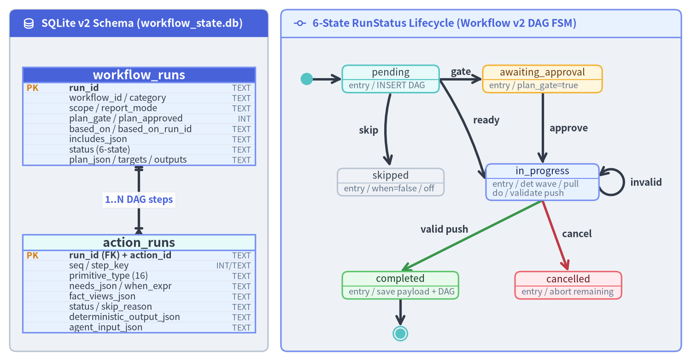

Stateful Pull-Push Engine, Workflow v2 DAG & SQLite Persistence
Once a workflow passes Phase 0 recon and its pre-flight readiness gates, pni501 (v0.2.0) runs a deterministic Workflow v2 Conditional DAG execution loop orchestrated by src/pni/_workflows/engine.py, planner.py, state_db.py, _projection.py, provenance.py, aggregator.py, _rollup_engine.py, _migration_engine.py, and _progress_engine.py. Rather than forcing sequential step-by-step acknowledgments or trusting an AI agent to track multi-step progress in volatile chat memory, the CLI acts as an authoritative DAG state machine: executing waves of ready deterministic analyzers across all 55 languages / 57 grammars in parallel (ThreadPoolExecutor), projecting step-scoped fact_views with compact schemas on get-action / get-actions, validating Pydantic schemas, grounded paths, and false-positive triage (finding_adjustments) on push-action, and chaining completed As-Is audits into rollup, migration, and progress workflows.

Source Code
from drawlib.canvas import save, setup
from drawlib.diagrams.sequence import Participant, PhosphorIcon, SequenceDiagram
from drawlib.styles import Styles
d = SequenceDiagram(
node_style=Styles.PrimaryBold,
node_text_style=Styles.DarkBold.patch(text_size=10.5),
edge_style=Styles.DarkBold,
edge_text_style=Styles.DarkBold.patch(text_size=10.0),
node_card_style=Styles.Neutral.patch(
text_color=Styles.Dark.text_color, shape_r=1.6
),
autonumber=True,
col_width=56.0,
step_y=7.2,
margin=5.0,
)
agent = d.add(
Participant("AI Agent", width=25.0, height=15.5, icon=PhosphorIcon.ROBOT, icon_size=5.8)
)
engine = d.add(
Participant(
"pni v2 Engine\n(engine + planner)",
width=40.0,
height=15.5,
icon=PhosphorIcon.GEAR_SIX,
icon_size=5.8,
style=Styles.WhiteBold,
text_style=Styles.WhiteBold.patch(text_size=10.0),
card_style=Styles.PrimaryFlat.patch(shape_r=1.6),
)
)
analyzers = d.add(
Participant(
"Recon, Parallel\nAnalyzers & Gates",
width=40.0,
height=15.5,
icon=PhosphorIcon.MAGNIFYING_GLASS,
icon_size=5.8,
card_style=Styles.PrimaryNeutral.patch(shape_r=1.6),
)
)
db = d.add(
Participant(
"workflow_state.db\n(SQLite v2 DAG)",
width=42.0,
height=15.5,
icon=PhosphorIcon.DATABASE,
icon_size=5.8,
card_style=Styles.SecondaryNeutral.patch(shape_r=1.6),
)
)
cache = d.add(
Participant(
"Cache &\npni_report/",
width=28.0,
height=15.5,
icon=PhosphorIcon.FILE_TEXT,
icon_size=5.8,
)
)
agent.request(engine, "workflows plan <id>")
engine.request(analyzers, "Phase 0 Recon, when: & Mermaid")
engine.request(cache, "Write .pni/cache/<wf>/plan.json")
engine.reply(agent, "Mermaid DAG + alignment Qs")
agent.request(engine, "start <id> --auto-approve --pull")
engine.request(db, "INSERT wf-<8hex> & DAG act-01..NN")
with d.opt("plan"):
agent.request(engine, "push act-01 PlanApproval --next")
engine.request(db, "Approve plan; disabled -> skipped")
with d.loop("dag"):
agent.request(engine, "get-action / get-actions <run>")
engine.request(analyzers, "Auto-run det wave (parallel, 0 ACK)")
engine.request(cache, "Write facts.json (+ 15 Tier C DSLs)")
engine.reply(agent, "fact_views + Compact Schema")
agent.request(engine, "push <run> <act> -f json --next")
engine.request(analyzers, "Validate Pydantic, paths & triage")
with d.alt("err"):
engine.reply(agent, "Error detail (in_progress)")
with d.else_("ok"):
engine.request(cache, "Emit score/SARIF + _facts/ sync")
engine.request(db, "Save agent_input_json (completed)")
engine.reply(agent, "Return next ready (--next)")
engine.request(db, "SET workflow_runs.status = completed")
engine.reply(agent, "COMPLETED (Executed DAG)")
dw, dh = d.get_size()
setup(width=int(dw) + 8, height=int(dh) + 6, dpi=150)
d.draw(xy=(4.0, 3.0))
save()
1. Workflow v2 Conditional DAG Pull-Push Protocol
Every stateful workflow run progresses through four phases in src/pni/_workflows/planner.py and engine.py. For workflow YAML authoring (needs, when), Phase 0 Mermaid validation, and pre-flight readiness gates, see Workflows & Pre-Flight Gates.
Phase 0: Lightweight Recon & Validated Mermaid DAG Planning (pni workflows plan)
Before committing state to SQLite, build_workflow_plan() inspects the workspace in under a second (discover_repo_components, run_project_inspect, container engine detection, and evaluate_when_expr):
- Evaluates every
when:guard expression safely via Pythonast.parse(..., mode="eval")over deterministic recon context (has_runtime_harness,docker_available,has_tests,has_web_api,has_cli,lang,scope,detected_frameworks) without ever callingeval(). - Generates a deterministic Mermaid
flowchart TDDAG ([AUTO],[AI],[SKIP],[ASK]badges) validated throughvalidate_mermaid_static()(and verifiable in Chromium viapni validate-mermaid --browser) and writes.pni/cache/<workflow_id>/plan.json.
Phase 1: Session Initialization & confirm_plan Gate (start_workflow_run)
- Loads
.pni/workflows/<id>.yamlwithbased_ontarget inheritance and.pni/pni.tomldefaults resolved, and enforces fail-closed pre-flight gates (inspect_base_audit_status,inspect_rollup_prerequisites,inspect_pentests_prerequisite). - Normalizes composite actions into flat DAG
PrimitiveStepentries (act-01..act-NN) preservingstep_key,needs,when, andfact_views, and prepends aconfirm_planapproval step wheneverplan_gate: true(the default). - Runs Phase 0 Recon, marks any
when:-false nodes asskippedimmediately, and insertsworkflow_runs(run_id = wf-<8hex>) plusaction_runsinto SQLite. - Human Alignment vs. Single-Command Auto-Approve:
- Interactive alignment (default): The run starts in
status = awaiting_approval. PushingPlanApprovalInputonconfirm_planrecordsconfirmed_targets,disabled_steps(markedskipped),focus_areas,extra_opt_outs,report_lang,report_formats, andreport_mode, then transitions the run toin_progress. - Single-command CI / autonomous start: Passing
--auto-approve --pull(or--plan <file>) approvesconfirm_planatomically and immediately returns the first ready AI action prompt (writing to a file cleanly via-o <path>when desired).
- Interactive alignment (default): The run starts in
Phase 2: Parallel Deterministic Waves & Projected Prompt Synthesis (get-action / get-actions)
When the agent pulls work via pni workflows get-action <run_id> or inspects the full parallel frontier via pni workflows get-actions <run_id> [--ready]:
- Zero-ACK Parallel Deterministic Auto-Execution (
_advance_deterministic_actions): Before rendering an AI prompt, the engine queriesdb.get_ready_actions(run_id), re-evaluateswhen:conditions against liveProjectFacts, and executes all DAG-ready deterministic primitives in parallel viaThreadPoolExecutor(max_workers=min(4, len(det_ready)))(project_inspect,ast_analyze,run_check,security_scan,web_pentest,migration_analyze,progress_analyze). Each completed analyzer is persisted immediately toaction_runs.deterministic_output_jsonand merged into.pni/cache/<workflow_id>/facts.json(also running the 15 Tier C companion DSL scanners once onreposcope)—eliminating empty{"acknowledged": true}ACK turns! - Step-Scoped
fact_viewsProjection (_projection.py): Rather than dumping megabytes of raw JSON on every turn,_render_projected_facts()injects only the fact slices relevant to the current action alongside compact schemas (key?optional notation; pass--full-schemafor complete JSON Schema), active cascaded rules, any parallel ready siblings, and—immediately beforeemit_score—the deterministicCompiledAuditDigest(aggregator.py) with 7-axis anchored baselines.
Phase 3: Schema Validation, Grounding Gates, Triage & Side Effects (push_workflow_action)
When the agent submits pni workflows push-action <run_id> <action_id> --file payload.json --next [-o next.md]:
- DAG Frontier Guard: Accepts any currently DAG-ready
action_id(not strictly linear order), allowing agents to complete independent parallel frontier steps in any order while rejecting unready or out-of-dependency pushes without mutating SQLite. - Pydantic Validation, Grounding & False-Positive Triage: Every submitted payload is parsed against its canonical Pydantic v2 model and cross-checked against
AstFacts.module_inventoryand workspace files (_verify_grounded_paths):
| Primitive Type | Validated Pydantic Model | Grounding, Triage & Deliverable Side Effects on Valid Push |
|---|---|---|
confirm_plan |
PlanApprovalInput |
Persists plan.json, applies confirmed_targets / extra_opt_outs, marks disabled_steps as skipped, and transitions run to in_progress |
record_architecture |
SystemProfile / StructureMap / ExecutionFlowMap |
Verifies layers[].paths, modules[].path, entry_points, and execution_flows[].involved_files; writes .pni/cache/<wf>/architecture.json and updates facts.json |
ai_interpret |
InterpretationInput |
Verifies findings[].file_path and action_items[].target_files; normalizes rule_checks against active step rules and opt-outs |
emit_score |
ScoreSubmissionInput -> ScoreResult |
Validates paths, applies audited false-positive triage (finding_adjustments: waive / reclassify -> triaged_adjustments), computes execution_dag (provenance.py), syncs structured evidence into pni_report_src/_facts/, and writes pni_report/<target>_score.json, *_summary.json, and *_findings.sarif.json |
synthesize_rollup |
RollupSynthesisInput -> ScoreResult |
Collects includes component scores, applies hybrid log1p(LOC) weighting + weakest-link guardrail (security/testing), attaches execution_dag & components, syncs pni_report_src/_facts/, and writes unified rollup score + SARIF |
emit_migration_plan |
MigrationPlanResult |
Verifies As-Is paths and safe relative pr_wbs[].target_files; attaches MigrationFacts + execution_dag, syncs _facts/, and writes pni_report/<target>_migration_plan.json |
emit_progress |
ProgressAssessmentInput -> ProgressResult |
Combines deterministic Git branch/PR ProgressFacts with remediation delta and writes pni_report/<target>_progress.json |
write_drawlib_report |
ReportCompletionInput |
Verifies every path in generated_files (e.g., pni_report/<target>.pdf) exists inside workspace and has st_size > 0 bytes |
- Self-Correction &
--nextChaining: If Pydantic parsing fails, a hallucinated file path is detected, or a PDF deliverable is missing/empty,push_workflow_action()returns(False, error_detail)while keeping the step inin_progress. Once valid,complete_action()marks the stepcompleted; passing--next(and optionally-o <file>) immediately advances any newly unblocked deterministic wave and outputs the next ready AI action in one CLI invocation.
# Single-command v2 ergonomics: plan, start with --auto-approve --pull, and push with --next
pni workflows plan full_audit -o .pni/cache/full_audit/plan_preview.md
pni workflows start full_audit --auto-approve --pull -o .pni/cache/full_audit/action.md
pni workflows get-actions wf-1a2b3c4d --ready
pni workflows push-action wf-1a2b3c4d act-03 --file .pni/cache/full_audit/input_act-03.json --next
2. SQLite Persistence Schema & 6-State RunStatus Lifecycle
All stateful workflow sessions are stored in .pni/cache/workflow_state.db (WorkflowStateDB in src/pni/_workflows/state_db.py, configured with timeout=30.0 and additive ALTER TABLE schema migrations for seamless backward compatibility):

Source Code
from drawlib.canvas import save, setup
from drawlib.diagrams.er import Entity, ERDiagram
from drawlib.diagrams.state import FinalState, InitialState, State, StateDiagram
from drawlib.icons import phosphor
from drawlib.smartarts import Panel
from drawlib.styles import Colors, Styles
setup(width=214, height=112, dpi=150)
left_panel = Panel(
"SQLite v2 Schema (workflow_state.db)",
header_variant="filled",
header_height=8.5,
style=Styles.Neutral.patch(shape_r=2.0),
header_style=Styles.PrimaryFlat,
text_style=Styles.WhiteBold.patch(text_size=11.0),
icon=phosphor.database,
icon_style=Styles.WhiteBold,
)
left_panel.draw(xy=(3.0, 3.0), width=80.0, height=106.0)
erd = ERDiagram(
node_style=Styles.PrimaryNeutral.patch(
text_color=Styles.Dark.text_color, text_size=10.0
),
header_style=Styles.PrimaryNeutral.patch(text_size=10.5),
edge_style=Styles.DarkBold,
edge_text_style=Styles.PrimaryBold.patch(text_size=10.0),
)
wf_ent = erd.add(
Entity(
name="workflow_runs",
width=72.0,
header_height=4.8,
row_height=3.2,
header_style=Styles.PrimaryFlat.patch(text_color=Colors.White, text_size=10.5),
),
xy=(43.0, 76.0),
)
wf_ent.add_column("run_id", type="TEXT", pk=True)
wf_ent.add_column("workflow_id / category", type="TEXT", nullable=False)
wf_ent.add_column("scope / report_mode", type="TEXT", nullable=False)
wf_ent.add_column("plan_gate / plan_approved", type="INT", nullable=False)
wf_ent.add_column("based_on / based_on_run_id", type="TEXT")
wf_ent.add_column("includes_json", type="TEXT", nullable=False)
wf_ent.add_column("status (6-state)", type="TEXT", nullable=False)
wf_ent.add_column("plan_json / targets / outputs", type="TEXT")
act_ent = erd.add(
Entity(
name="action_runs",
width=72.0,
header_height=4.8,
row_height=3.2,
header_style=Styles.SecondaryNeutral.patch(
text_color=Styles.Dark.text_color, text_size=10.5
),
),
xy=(43.0, 24.0),
)
act_ent.add_column("run_id (FK) + action_id", type="TEXT", pk=True)
act_ent.add_column("seq / step_key", type="INT/TEXT", nullable=False)
act_ent.add_column("primitive_type (16)", type="TEXT", nullable=False)
act_ent.add_column("needs_json / when_expr", type="TEXT")
act_ent.add_column("fact_views_json", type="TEXT", nullable=False)
act_ent.add_column("status / skip_reason", type="TEXT", nullable=False)
act_ent.add_column("deterministic_output_json", type="TEXT")
act_ent.add_column("agent_input_json", type="TEXT")
wf_ent.connect(
act_ent,
cardinality="1:1..*",
start_side="bottom",
end_side="top",
label="1..N DAG steps",
)
erd.draw(xy=(0.0, 0.0))
right_panel = Panel(
"6-State RunStatus Lifecycle (Workflow v2 DAG FSM)",
header_variant="filled",
header_height=8.5,
style=Styles.Neutral.patch(shape_r=2.0),
header_style=Styles.PrimaryNeutral,
text_style=Styles.PrimaryBold.patch(text_size=11.0),
icon=phosphor.git_commit,
icon_style=Styles.PrimaryBold,
)
right_panel.draw(xy=(87.0, 3.0), width=124.0, height=106.0)
sd = StateDiagram(
node_style=Styles.SecondaryNeutral.patch(
text_color=Styles.Dark.text_color, shape_r=1.8, text_size=10.0
),
edge_style=Styles.DarkBold,
edge_text_style=Styles.DarkBold.patch(text_size=10.0),
)
s_init = sd.add(InitialState(), xy=(95.0, 87.5))
s_pend = sd.add(
State(
"pending",
shape="box",
entry="INSERT DAG",
width=30.0,
style=Styles.SecondaryNeutral.patch(
text_color=Styles.Dark.text_color, shape_r=1.8, text_size=10.0
),
),
xy=(121.0, 87.5),
)
s_wait = sd.add(
State(
"awaiting_approval",
shape="box",
entry="plan_gate=true",
width=37.0,
style=Styles.WarningNeutral.patch(shape_r=1.8, text_size=10.0),
),
xy=(168.0, 87.5),
)
s_skip = sd.add(
State(
"skipped",
shape="box",
entry="when=false / off",
width=33.0,
style=Styles.Neutral.patch(shape_r=1.8, text_size=10.0),
),
xy=(121.0, 55.5),
)
s_prog = sd.add(
State(
"in_progress",
shape="box",
entry="det wave / pull",
do="validate push",
width=35.0,
style=Styles.PrimaryNeutral.patch(shape_r=1.8, text_size=10.0),
),
xy=(168.0, 55.5),
)
s_done = sd.add(
State(
"completed",
shape="box",
entry="save payload + DAG",
width=36.0,
style=Styles.SuccessNeutral.patch(shape_r=1.8, text_size=10.0),
),
xy=(124.0, 23.5),
)
s_canc = sd.add(
State(
"cancelled",
shape="box",
entry="abort remaining",
width=33.0,
style=Styles.DangerNeutral.patch(shape_r=1.8, text_size=10.0),
),
xy=(176.0, 23.5),
)
s_final = sd.add(FinalState(), xy=(124.0, 8.5))
sd.connect(s_init, s_pend, start_side="right", end_side="left")
sd.connect(s_pend, s_wait, event="gate", start_side="right", end_side="left")
sd.connect(
s_pend,
s_skip,
event="skip",
bend=0.14,
start_side="bottom",
end_side="top",
text_style=Styles.DarkBold.patch(text_size=10.0, halign="right"),
)
sd.connect(
s_pend,
s_prog,
event="ready",
bend=-0.08,
start_side="right",
end_side="left",
text_style=Styles.DarkBold.patch(text_size=10.0, halign="left", valign="bottom"),
)
sd.connect(
s_wait,
s_prog,
event="approve",
start_side="bottom",
end_side="top",
text_style=Styles.DarkBold.patch(text_size=10.0, halign="left"),
)
sd.connect(s_prog, s_prog, side="right", event="invalid")
sd.connect(
s_prog,
s_done,
event="valid push",
start_side="bottom",
end_side="top",
style=Styles.SuccessBold,
text_style=Styles.DarkBold.patch(text_size=10.0, halign="right"),
)
sd.connect(
s_prog,
s_canc,
event="cancel",
start_side="bottom",
end_side="top",
style=Styles.DangerBold,
text_style=Styles.DarkBold.patch(text_size=10.0, halign="left"),
)
sd.connect(s_done, s_final, start_side="bottom", end_side="top")
sd.draw(xy=(0.0, 0.0))
save()
Key Table Responsibilities, Executed DAG Provenance, Rewind & Cancellation
workflow_runs: Stores session-level provenance includingrun_id(wf-<8hex>),workflow_id,category(audit,rollup,migration, orprogress),scope(repoorcomponent),plan_gate,report_mode(unified,per_component,both),based_on/based_on_run_id,includes_json(for monorepo rollups), frozentargets_json/outputs_json,plan_json,plan_approved, andauto_approved.action_runs: Stores the normalized1..NDAG primitive rows (PRIMARY KEY (run_id, action_id)), recordingstep_key,needs_json,when_expr,fact_views_json,rules_json,params_json,skip_reason,deterministic_output_json, andagent_input_json. A step becomes DAG-ready (db.get_ready_actions()) as soon as every dependency inneeds_jsonreachescompletedorskipped.- Executed Audit DAG & Finding Triage (
provenance.py&aggregator.py): Onemit_score/synthesize_rollup/emit_migration_plan/emit_progress,build_execution_dag_summary()compiles an immutableExecutionDagSummarydirectly from SQLiteaction_runs,plan.json, and the syncedpni_report_src/_facts/manifest—recording which stages ran (AUTO,AI,HYBRID,ASK) or wereSKIPped with exact reasons—alongsideScoreResult.triaged_adjustmentsdocumenting every waived or reclassified finding. - Six-State Lifecycle (
RunStatus), Rewind & Cancellation:- Forward states:
pending-> (awaiting_approvalwhenplan_gate: true) ->in_progress->completed(orskippedwhenwhen:evaluates tofalseor a step is disabled inconfirm_plan). pni workflows rewind <run_or_workflow> <action> [--pull] [-o path](alias:retry-action) rewinds a run back to<action>, re-syncs.pni/workflows/<id>.yamlparameters, and clears downstream step outputs without restarting fromact-01.- Unfinished runs transition to
cancelledviapni workflows cancel <run_id>,pni workflows cancel --superseded [-w <wf>], orpni workflows start <wf> --supersede.
- Forward states:
3. Multi-Stage Chaining: Rollup, Migration & Progress Workflows
Large-scale monorepo audits and modernization plans fail when an AI agent plans refactoring without grounded As-Is diagnostics or re-runs Docker builds, Trivy scans, and HTTP pentests on every iteration. pni501 chains completed audit evidence deterministically across all 4 workflow categories:

Source Code
from drawlib.canvas import save, setup
from drawlib.diagrams.architecture import ArchitectureDiagram, Node, NodeGroup, PhosphorIcon
from drawlib.styles import Styles
setup(width=172, height=100, dpi=150)
diag = ArchitectureDiagram(
node_style=Styles.PrimaryBold,
node_text_style=Styles.DarkBold.patch(text_size=10.0),
edge_style=Styles.DarkBold,
edge_text_style=Styles.DarkBold.patch(text_size=10.0),
node_card_style=Styles.PrimaryNeutral.patch(
text_color=Styles.Dark.text_color, shape_r=1.5
),
)
g_stage1 = diag.add(
NodeGroup(
title="Stage 1: Base Audit / Rollup (audit | rollup, wf-da941741 = COMPLETED)",
width=166.0,
height=32.0,
style=Styles.Neutral.patch(shape_r=2.0),
text_style=Styles.PrimaryBold.patch(text_size=10.5, halign="left", valign="top"),
),
xy=(3.0, 64.0),
)
s1_static = g_stage1.add(
Node(
"ProjectFacts & Native\ntree-sitter AST (55 Langs)",
width=36.0,
height=18.5,
icon=PhosphorIcon.TREE_STRUCTURE,
icon_size=5.4,
),
xy=(22.0, 12.5),
)
s1_dyn = g_stage1.add(
Node(
"Parallel Runtime,\nSecurity & Pentest",
width=36.0,
height=18.5,
icon=PhosphorIcon.SHIELD_WARNING,
icon_size=5.4,
),
xy=(62.5, 12.5),
)
s1_arch = g_stage1.add(
Node(
"ArchitectureRecord\n& Finding Triage",
width=36.0,
height=18.5,
icon=PhosphorIcon.GRAPH,
icon_size=5.4,
),
xy=(103.5, 12.5),
)
s1_score = g_stage1.add(
Node(
"7-Axis Score, SARIF &\nExecuted DAG (pni_report/)",
width=36.0,
height=18.5,
icon=PhosphorIcon.MEDAL,
icon_size=5.4,
card_style=Styles.SecondaryNeutral.patch(shape_r=1.5),
),
xy=(144.0, 12.5),
)
n_bridge = diag.add(
Node(
"workflow_state.db Link (based_on -> based_on_run_id) & Rollup includes\n_assemble_facts_bundle() + pni_report_src/_facts/ Automatic Sync",
width=114.0,
height=14.0,
icon=PhosphorIcon.DATABASE,
icon_size=5.4,
style=Styles.WhiteBold,
text_style=Styles.WhiteBold.patch(text_size=10.2),
card_style=Styles.PrimaryFlat.patch(shape_r=1.6),
),
xy=(86.0, 50.0),
)
g_stage2 = diag.add(
NodeGroup(
title="Stage 2: Downstream Chained Workflows (migration | progress | rollup)",
width=166.0,
height=32.0,
style=Styles.SecondaryNeutral.patch(shape_r=2.0),
text_style=Styles.DarkBold.patch(text_size=10.5, halign="left", valign="top"),
),
xy=(3.0, 4.0),
)
s2_mig = g_stage2.add(
Node(
"migration_analyze /\nprogress_analyze /\nrollup_collect",
width=47.0,
height=19.0,
icon=PhosphorIcon.GIT_DIFF,
icon_size=5.4,
),
xy=(28.0, 12.5),
)
s2_plan = g_stage2.add(
Node(
"emit_migration_plan /\nemit_progress /\nsynthesize_rollup",
width=47.0,
height=19.0,
icon=PhosphorIcon.CHECK_SQUARE_OFFSET,
icon_size=5.4,
card_style=Styles.PrimaryNeutral.patch(shape_r=1.5),
),
xy=(83.0, 12.5),
)
s2_pdf = g_stage2.add(
Node(
"write_drawlib_report\nFlat pni_report_src/\n-> pni_report/<target>.pdf",
width=47.0,
height=19.0,
icon=PhosphorIcon.FILE_PDF,
icon_size=5.4,
style=Styles.SuccessBold,
card_style=Styles.SuccessNeutral.patch(shape_r=1.5),
),
xy=(138.0, 12.5),
)
diag.connect(s1_static, s1_dyn, routing="orthogonal")
diag.connect(s1_dyn, s1_arch, routing="orthogonal")
diag.connect(s1_arch, s1_score, routing="orthogonal")
diag.connect(g_stage1, n_bridge, routing="orthogonal", style=Styles.PrimaryBold)
diag.connect(n_bridge, g_stage2, routing="orthogonal", style=Styles.PrimaryBold)
diag.connect(s2_mig, s2_plan, routing="orthogonal")
diag.connect(s2_plan, s2_pdf, routing="orthogonal", style=Styles.SuccessBold)
diag.draw(xy=(0.0, 0.0))
save()
End-to-End Chaining Mechanics (engine.py, _rollup_engine.py, _migration_engine.py, _progress_engine.py)
- Monorepo Multi-Component Rollup (
category: rollup):- Declares
includes: [...](RollupComponentSpecwithid,workflow_id,root,lang, optionalweight,primary). inspect_rollup_prerequisites()verifies every component has a completed<output_dir>/<id>_score.jsonbeforestart.execute_rollup_collect()aggregates component scores using explicit weights orlog1p(LOC)smoothing, applies a weakest-link guardrail (cappingsecurityandtestingwithin+15points of the lowest primary component), scans root governance and 15 Tier C companion DSLs, and persists a unified rollupScoreResult, SARIF report, and 7-chapter Drawlib report inpni_report/.
- Declares
- Pinning
based_on_run_id& Automatic Fact Reconstruction (category: migration):- On
pni workflows start <migration_id>,inspect_base_audit_status()pins the latestcompletedrun ofbased_onintoworkflow_runs.based_on_run_id. - On every Stage 2 step,
_assemble_facts_bundle()hydratesproject_facts,ast_facts,runtime_facts,security_facts,pentest_facts,architecture_record, andbase_score_resultdirectly from SQLite—feedingmigration_analyze(topological Waves1..4, Tarjan SCCcycle_cuts,implicit_contracts,env_contracts,boundary_touchpoints,mechanical_codemods, andDEC-01..NNspec_vs_bug_candidates). validate_and_persist_migration_plan()verifies As-Is path grounding, recordsexecution_dag, syncspni_report_src/_facts/, and emitspni_report/<target>_migration_plan.json+ the 7-chapter Migration PDF (pni_report/<target>.pdf).
- On
- Git-Backed Remediation Delta Tracking (
category: progress):- Links to
.pni/history/audit/<based_on>.jsonlandpni_report/<based_on>_score.json(so it works seamlessly even on fresh CI checkouts without.pni/cache/workflow_state.db), measuring branch/commit progress against a baseline audit and migration plan before compiling a progress report inpni_report/. See Drawlib Visual Reporter for flat report compilation details.
- Links to